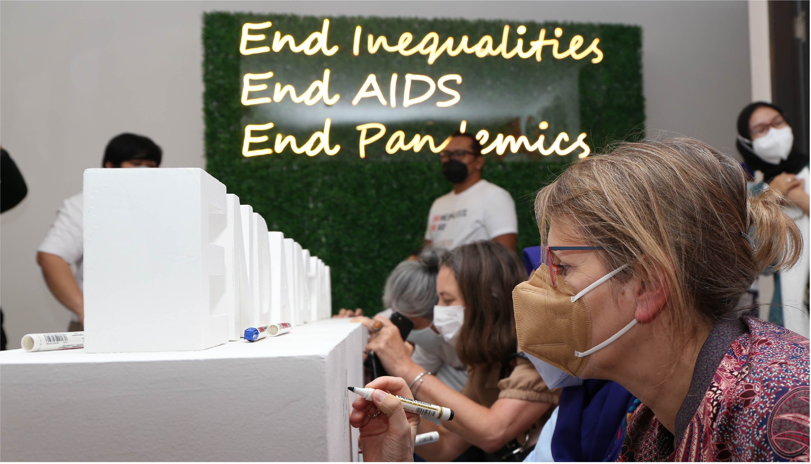

United Nations In Indonesia
Country Results Report 2021
Stronger Health Systems
The COVID-19 pandemic pushed Indonesia’s healthcare system to the brink in 2021. At the peak of June and July’s surge in infections, the hospital bed occupancy rate for isolation reached 78% in Indonesia, with 76% bed occupancy at Intensive Care Units. This not only taxed the country’s ability to mitigate the impact of the coronavirus but its ability to cope with an
array of contemporary health challenges. In response, the Ministry of Health (MoH) increased the capacity of isolation wards by 38%, and by 138% for Intensive Care Units.
UN interventions also helped ensure the system continued to function under unprecedented stress. The World Health Organization alone supported 39 activities to strengthen Indonesia’s healthcare capacity, across technology, policy, and human resources. In conjunction with Universitas Gadjah Mada, for example, the UN trained more than 1,350 officials in evidence-based health policymaking, with a further 106 trained in health planning and education. Through 14 additional training activities, a total of 4,312 participants enhanced their knowledge on various aspects of pharmacology and pharmacovigilance, particularly related to the national COVID-19 preparedness and response plan.
In 2021 the UN continued to support the Government’s National Health System Reform (SKN) agenda through reviewing the impact of COVID-19 on health policies, assessing the Ministry of Health’s organisational structure, and reviewing existing regulations. Systemwide interventions include support for several major studies to better understand challenges hindering universal access to sexual and reproductive healthcare, including family planning, and a “Building Healthy Cities” program involving 440 multidisciplinary actors, which contributed to improved health access for those often left behind, greater community participation, and the development of a citizen reporting system for stunting and wasting. Through the program, the UN developed a data integration platform to support data-driven decision-making in the City of Makassar for seven healthy city-related sectors, including public works, tourism, and transportation.
In 2021, the UN supported government proposals that mobilised almost US$88 million from the Global Fund—an international body designed to accelerate the end of HIV, TB, and Malaria as epidemics— towards COVID-19 rapid response and mitigation of HIV, TB, and Malaria during COVID-19. A further US$88 million was mobilized towards Indonesia’s HIV response in 2022-2023. In total, the UN helped the Government secure almost US$457 million from the Global Fund for 2021- 2023 for the national response on HIV, TB, and malaria.

 Support for Indonesia’s National Vaccination Scheme
Support for Indonesia’s National Vaccination Scheme
In response to one of the world’s fastest-spreading COVID-19 outbreaks, the Government launched an unprecedented national vaccination program that had delivered at least one dose of COVID-19 vaccination to 59.7% of Indonesia’s population by the end of 2021. The fully vaccinated percentage stood at 42.1% with more than 10,000 healthcare facilities consistently reporting their vaccination stock through the UN-MoH SMILE digital application, which allows health workers.
to monitor vaccine supply chains in real-time. All told, SMILE supported Indonesia’s administration of nearly 300 million doses of COVID-19 vaccine across all 34 provinces. The UN trained some 12,000 healthcare workers on SMILE’s use, and an enhancement to the app connected the MoH with Biofarma, Indonesia’s largest vaccine manufacturer.
National vaccination supplies were also bolstered through the arrival of more than 87 million COVID-19 vaccinations through the COVAX mechanism in 2021. In addition, the UN worked with more than 6000 primary health care centres across 13 provinces to shore up routine immunisation programs—with some threequarters of those facilities (74.58%) reporting stock outs of (non-COVID-19) vaccines through SMILE.
Meanwhile, the UN’s Health Governance Initiative, known as the HEART Project, enabled the Ministry of Health to update health protocols for AIDS, tuberculosis, and malaria during the COVID-19 pandemic, including protocols for healthcare workers, door-to-door services for the distribution of LLINs, ARV, and tuberculosis medication, and for drivethrough testing. Through HEART, the UN supported the Ministry in implementing the Financial Management Information System developed by the Ministry of Finance for improved grant management and program achievement, including training for 259 staff on using the system on Malaria, TB, and HIV response.
 Health Provisioning for Refugees
Health Provisioning for Refugees
Changes to national regulations meant that refugees no longer received Government coverage for COVID-19 treatment, particularly hospitalisation, from June 2021. As such, the UN covered the cost of treatment for refugees, ensuring their continued access to primary health care services, life-saving treatment, and essential healthcare such as maternity support, HIV services, and vaccinations for children.
Refugees continued to have access to primary health care services through government-mandated community health centres called Puskesmas. However, the UN, through its implementing partner, covered the costs of refugee referrals to secondary and tertiary health services, focusing on lifesaving, threatening, or emergency conditions. In total, the UN, through its implementing partner, conducted 10 meetings with six hospitals and two mental health clinics on referral pathways for refugees living independently and medical administration for refugees.
UN coordination with local governments, and with partner hospitals, also allowed refugees to access government facilities for COVID-19 related isolation and quarantine at no charge, where space was available. In 10 cities where government facilities had reached capacity, the UN provided additional facilities to assist a total of 2,990 refugees in quarantining, with 346 receiving supports during COVID-19 isolation. UN advocacy supported a Ministry of Health decree that by year’s end enabled more than 7,000 refugees—or 65% of Indonesia’s refugee population aged 12 and above—to receive their first dose of COVID-19 vaccinations under nationwide public and private vaccination schemes.
In 2021, the UN and its partners continued providing free and accessible HIV prevention, care, and treatment to persons of concern—including independently living refugees—as well as a quality reproductive health services.
 HIV and AIDS
HIV and AIDS
Indonesia is committed to ending AIDS by 2030 by reaching “95-95-95”, a global target that refers to the percentages of people living with HIV (PLHIV) who should know their HIV status, the percentage receiving treatment, and the percentage who demonstrate viral suppression.
Indonesia made progress on the 40-year epidemic in 2021, with HIV incidence decreasing from 0.11 people per 1,000 in 2019 to 0.10 (0.12 male, 0.08 female) in 2021. Although these numbers appear incremental, they reflect the significant efforts made to adjust and keep HIV programming running despite the COVID-19 pandemic. This continues a downward trend that has seen a 47% reduction in new HIV infections from 2010 to 2021.
UNAIDS estimates that some 543,100 people have HIV in Indonesia, of which 68% know their HIV status. However, only 28% of all estimated PLHIV are on treatment, and only 8% of all estimated PLHIV demonstrate viral suppression. Although there remains a long way to go, this represents an improvement on 2020’s figures of 66%, 26%, and 6% respectively, on the same HIV treatment cascade.
HIV prevalence remains low in Indonesia’s general population, but new infections are high among Key Populations, a designation that covers networks of sex workers, men who have sex with men, transgender people, and people who use drugs, among other vulnerable groups. The UN continues to provide technical assistance for the prevention, testing, and treatment of HIV. This includes the piloting in 2021 of an innovative HIV self-testing programme to expand HIV testing among Key Populations and piloting a pre-exposure prophylaxis programme. The UN also launched awareness raising campaigns on the availability of these services, especially among Key Populations.
The Government continues to expand the HIV treatment network to bring services closer to communities. This includes efforts to decentralise HIV treatment from hospitals to the primary care level, especially in 238 priority HIV districts. In 2021 alone, the Ministry of Health assigned 3,200 new treatment sites, with UN support in the form of technical assistance and
mentoring for up to 10,082 primary health workers. The UN also supported the development of new protocols for a dual referral mechanism between health facilities and communities. Special assistance was mobilised to mitigate COVID-19’s impact on HIV services, including exploring new ways to deliver HIV tests and treatment. The UN also boosted the capacity of national networks of PLHIV and Key Populations to be engaged in the monitoring of HIV policy and programme implementation, including access to HIV services, discriminatory policies, and youth involvement.
The UN helped the Government develop a national multisectoral plan on HIV, as well as a health sector strategy on HIV. This included technical assistance to generate strategic information to project HIV estimates, national HIV spending and monitoring of policy implementation. The UN also worked with the Jakarta Government to develop a provincial strategy on HIV.